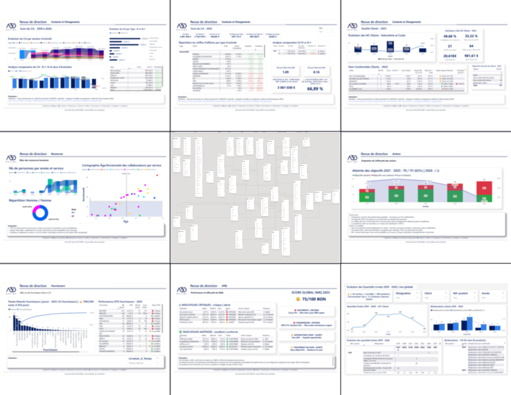
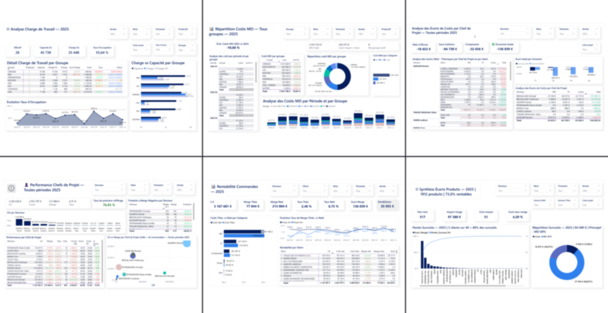
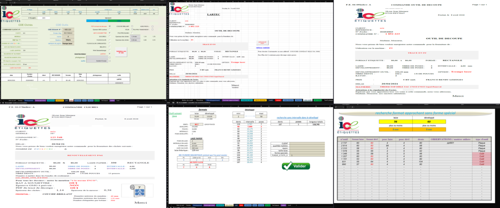
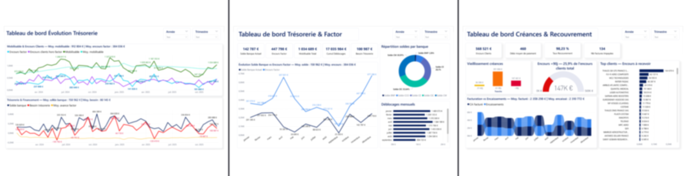
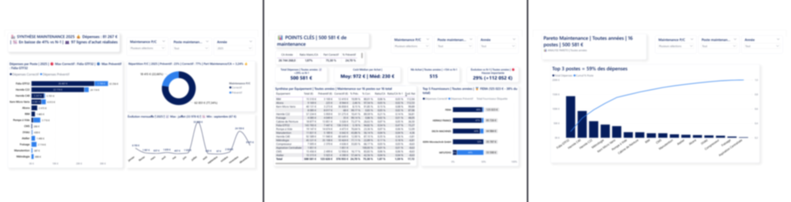
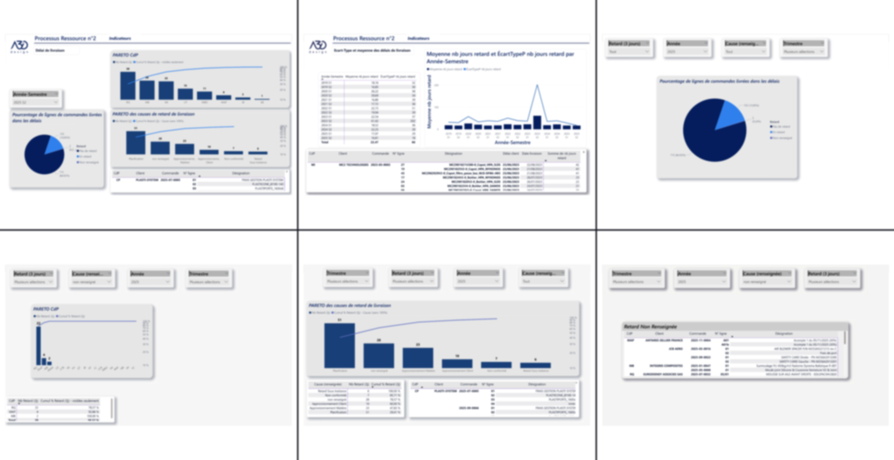
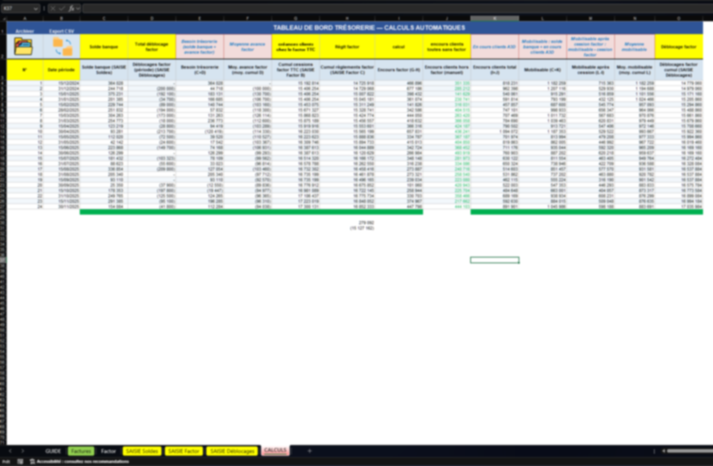
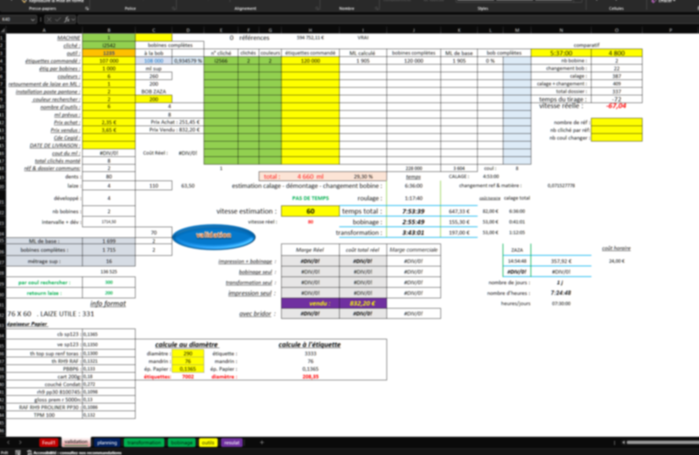
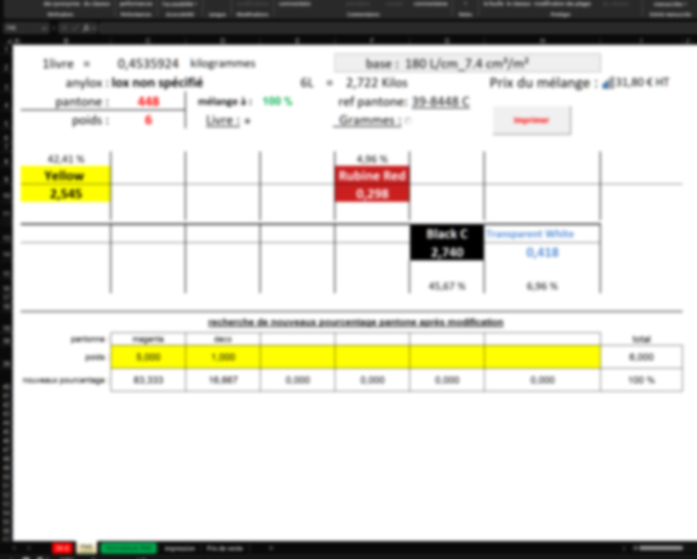
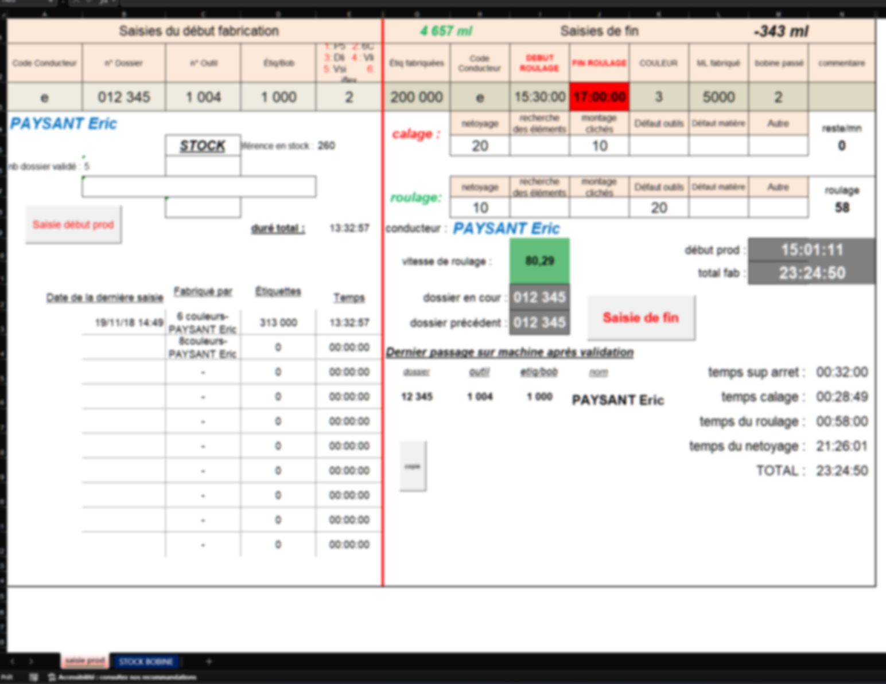

Aperçu de mes projets
Survolez pour explorer, cliquez pour voir le détail

Power BI ISO 9001ISO 9001 — Revue De Direction
56 pages, ~400 mesures DAX, 40 tables. Point critique → point fort audit.

Power BI Coûts ProductionAnalyse des Coûts de Production
6 pages connectées au moteur VBA. Rentabilité, écarts, charge de travail.
 Excel VBA
VBA 13 modules
Excel VBA
VBA 13 modules
Moteur VBA — Coûts de Production
13 modules, ~40 centres de charge. De 3-4 jours à quelques secondes.
 ICE Étiquettes
Reporting
ICE Étiquettes
Reporting
Reporting, Suivi Machines & Opérateurs
27 onglets, 6 machines, objectifs, primes, NC et CA.

ICE Étiquettes OutilsCommande Plaques & Création Outils
Temps réduit de 10 min à 2 min. 22 000+ commandes.

Power BI TrésorerieTrésorerie
5 comptes bancaires, 24 périodes bi-mensuelles.

Power BI MaintenanceMaintenance
Suivi équipements, interventions et planification préventive.

Power BI OTDAnalyse OTD — Retards de Livraison
Pareto, causes, délais par chef de projet et performance par client.

Excel VBA VBA TrésoOutil de Trésorerie
Macros VBA, flux financiers, alimentation dashboard Power BI.

ICE Étiquettes SimulationSimulation Temps de Production
Faisabilité des dossiers techniques, affinage des devis.

ICE Étiquettes EncresGestion de Stockage des Encres
-30% pertes d'encre. Déployé sur 5 sites.

ICE Étiquettes PointeuseSaisie Production & Pointeuse
Pointeuse intégrée, étiquette de suivi inter-équipes.